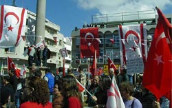

Republic of Cyprus Flag and other Flags in Cyprus
Turkish flag in Cyprus

Turkish flags in occupied Nicosia An 18% minority of Cypriots is Turkish speaking and has a Turkish ethnic background. According to the constitution, the Republic of Cyprus authorities as well as communal authorities and institutions have the right to fly on holidays together with the flag of the Republic of Cyprus either the Greek or the Turkish flag at the same time. The 1960 constitution also gave the right to Turkey to maintain in Cyprus a contingent made by 650 Turkish military officers. After the Turkish invasion of 1974 most Turkish Cypriots moved to the northern part of Cyprus which is occupied by the Turkish army. In 1983 this occupied part of the Republic of Cyprus was declared as independent by Turkey with the name "Turkish Republic of Northern Cyprus" but only Turkey, which continues to maintain a 40.000 strong occupation force, recognized this illegal entity. The 40.000 Turkish soldiers along with the mainland Turkish settlers that were brought to Cyprus after the invasion now constitute the majority of the population in the northern occupied part of Cyprus. The Turkish flag can be found in all public buildings in northern Cyprus, in the military camps of the Turkish army and along the cease fire line. Print Page |